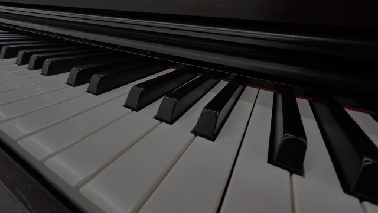
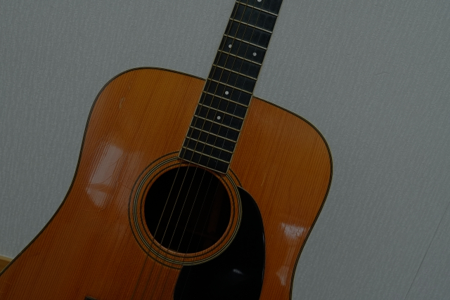
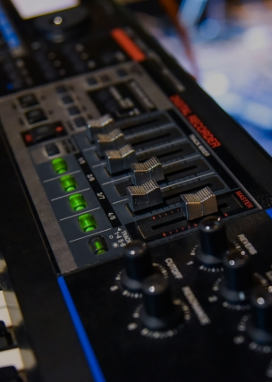

ABOUT
MUDAIのウェブサイトへようこそ
MUDAIは、友人の書いた詩に曲をつけてみよう！と、そんな企画で始まったユニットです。anko、dakei、ayukoの3人で、主に曲をつくって、アレンジして、楽器を弾いて、歌を歌っています。
普段は口にしなくても、心の中の言の葉を紙に書き起こせば、それはどれも素敵な詩。大切な言葉たちに、大切に大切に音楽をつけています。



MUDAIは、友人の書いた詩に曲をつけてみよう！と、そんな企画で始まったユニットです。anko、dakei、ayukoの3人で、主に曲をつくって、アレンジして、楽器を弾いて、歌を歌っています。
普段は口にしなくても、心の中の言の葉を紙に書き起こせば、それはどれも素敵な詩。大切な言葉たちに、大切に大切に音楽をつけています。